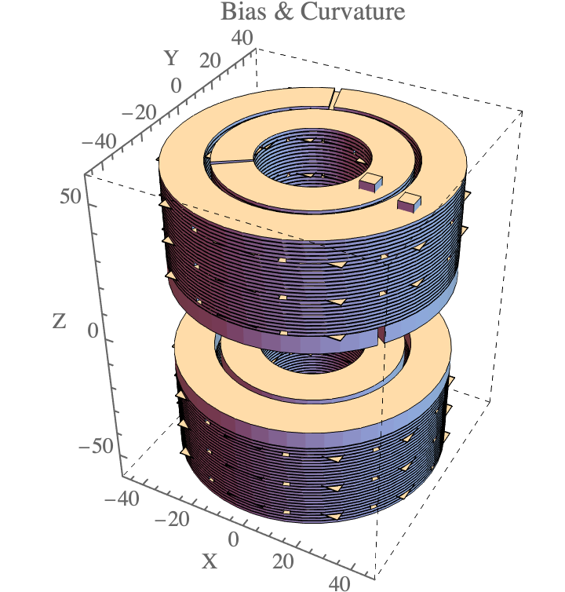
Hi! Welcome to Zirdi's website
About Me
My name is M. Zirdi Syukur (he/him), an Indonesian physicist, engineer, and occasional musician! My research interests lie both in analogue quantum simulation and quantum sensing, reflecting my undergraduate and professional research experience. Looking ahead, I’m particularly interested in many-body physics, quantum information scrambling and dynamics, non-equilibrium phenomena, and enhanced quantum metrology. I’m also interested in bridging academia and industry to help bring practical quantum technologies closer to real-world applications.
I’m currently pursuing a master’s degree in Quantum Technologies at the University of Oxford. Previously, I worked as a researcher in the atomic magnetometry group at the Quantum Innovation Centre (Q.InC), A*STAR, in Singapore. I completed my bachelor’s degree in Physics at Yale-NUS College with honours, cum laude, working under the supervision of Dr. Ben A. Olsen on quantum simulations using ultracold gases. You can find out more about my work in the Research tab.
Outside of physics, I love playing guitar, dancing to hip-hop, shooting film photography, solving non-jigsaw puzzles, reading doorstopper-sized fantasy novels, and playing board games like Terraforming Mars. I also run tabletop role-playing games like Dungeons & Dragons :)
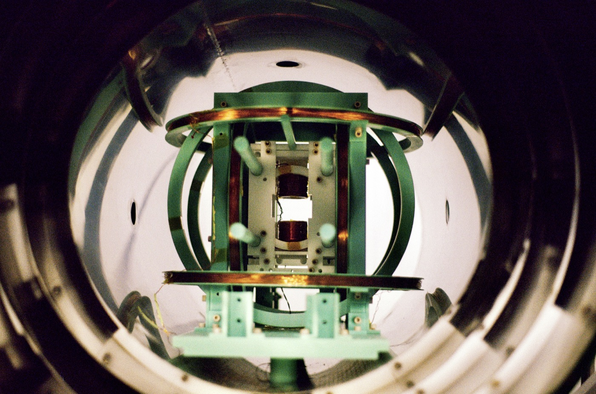
Research
RF Magnetometer embedded in magnetic shielding
Research Website Find all of my projects in one organized notebook
Explore a broader overview of my research interests, selected projects, and future work in quantum technologies.
Visit the research websiteSelected Projects
QEP 2.0 Atomic Magnetometer Precision sensing with alkali vapour
At A*STAR Q.InC, I built and tested a prototypical scalar atomic magnetometer, reaching a measured sensitivity as low as 24 fT/√Hz while detecting a 10 μT test field. At geomagnetic field strengths, this corresponds to sensitivity near one part per billion per √Hz. The sensor uses potassium vapour in a thermal cell and measures atomic spin precession through the rotation of a linearly polarised probe beam. Potential applications include geomagnetic surveys, fundamental physics, NMR, MRI, and NQR.
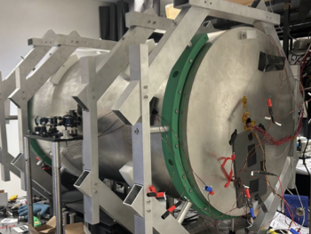
 NQR Radio-Frequency Magnetometer
Chemical specific precision sensing
NQR Radio-Frequency Magnetometer
Chemical specific precision sensing
At A*STAR Q.InC, I contributed to the first half of a project to build a prototype NQR-based radio-frequency magnetometer for detecting unexploded ordnance and specific crystalline narcotics. When I left to pursue my MSc, the literature review was complete and the experimental setup had been designed and assembled for initial testing. The sensor is related to the QEP 2.0 Atomic Magnetometer, with RF and detuning coils, modular sample mounts, and pump-power amplification for RF operation.
Read more
 Hybrid Optical Pumping of Dual-Atomic Vapours
Investigating spin-temperature equilibrium
Hybrid Optical Pumping of Dual-Atomic Vapours
Investigating spin-temperature equilibrium
I designed an experiment to investigate and test common assumptions made about spin-temperature equilibrium in hybrid alkali-vapour cells. In this project, we investigated the technique of hybrid pumping, which often increases the uniformity and sensitivity of atomic sensors; in particular, we wanted to experimentally observe how the efficiency of the technique diminishes beyond a certain ratio of densities within a hybrid vapour cell. The longer term goal is to improve vapour-cell uniformity and support more sensitive atomic magnetometers.
Read moreLow Noise Electronics for Magnetometry Custom current sources and amplifiers
I built low-noise current sources and amplifiers to provide stable references for magnetometry experiments. Their radio-frequency noise performance was comparable to commercial instruments, including products that were difficult to obtain.
Read more
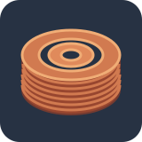
Electromagnet for Cold Atoms
Direct-current field simulations and design
This undergraduate research project and my senior-year thesis at Yale-NUS College explored a Bitter-type bias-curvature electromagnet for ultracold lithium-6 experiments. The bias coils provide the strong magnetic field that tunes atom interactions, while the smaller curvature coils shape the field profile and can compensate its curvature. I used finite-element simulations to compare coil designs, then fabricated prototype coils and measured their magnetic-field profiles. These measurements supported a model of a strong, near-zero-curvature field, while full-power operation and the magnet’s cooling performance remained to be demonstrated.
Read more Download Paper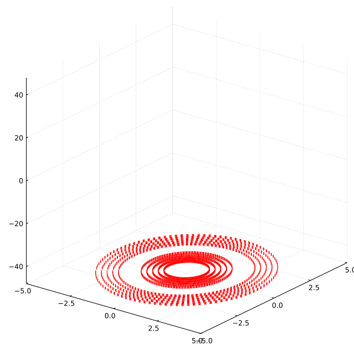
Animation of building the current's simulated inside electromagnets
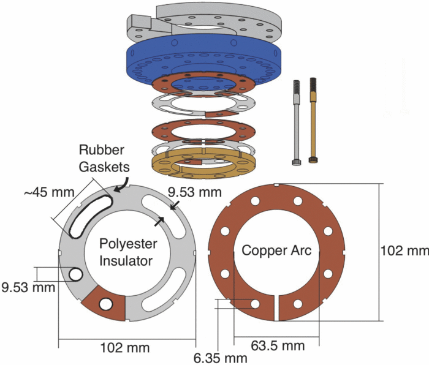
Read about bitter-type electromagnets
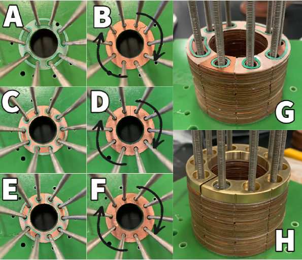
Assembling the curvature-coil stack
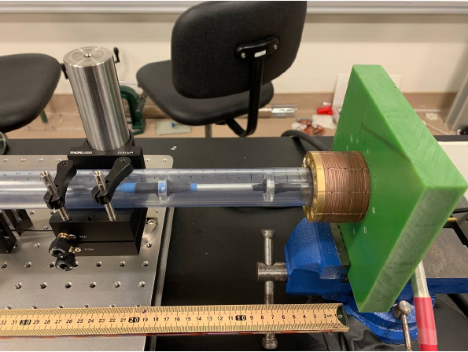
Measuring the axial field profile
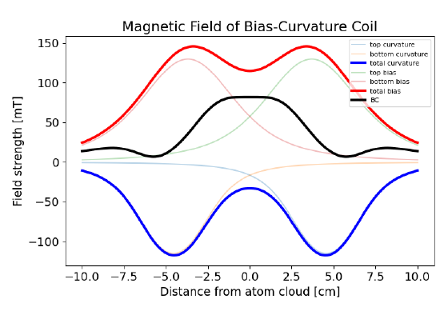
Modelled 832 G near-zero-curvature profile
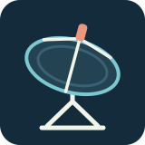
Radio Astronomy
Building and testing a radio telescope
This was an undergraduate summer research experience. One of the most important wavelengths for research in radio astronomy is 21cm. Galaxies are filled with neutral atomic hydrogen gas that emits strongly at this wavelength, making it an invaluable tool for research on nearby galaxies' structures, dynamics, and star formation rates. This wavelength is protected by international agreements but some countries are more zealous spectrum protectors than others. In this project, I make improvements to a small, portable, feed-horn style radio telescope in order to characterize the radio frequency interference (RFI) environment in Singapore near 21cm and to determine whether it would be useful to build a larger telescope on the Yale-NUS campus for teaching purposes in the future. Click here to download my presentation on the research
Read more Download Presentation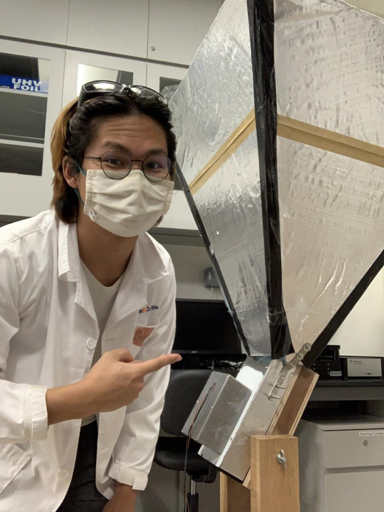
The Constructed Radio Telescope
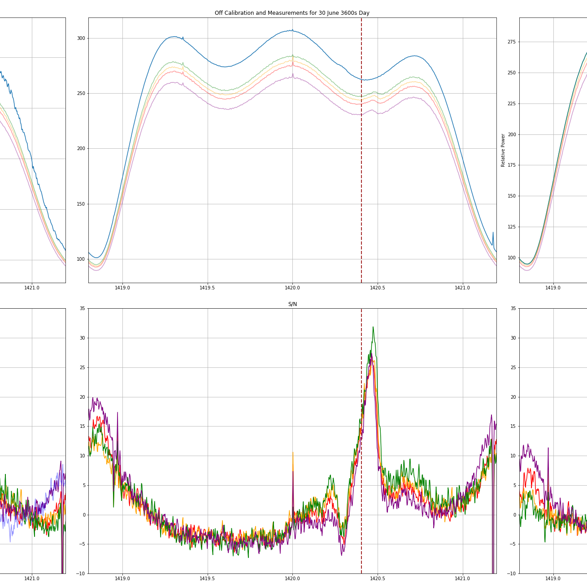
Spectrums around 1.4 GHz produced with VIRGO spectrometer
Read about 21-cm Radiation
Curriculum Vitae
Download CVEducation
MSc in Quantum Technologies at the University of OxfordSept 2026–Present
Relevant courses: Quantum Technology Hardware and Applications; Quantum Matter 1 & 3; Quantum Processes and Computation; Industry Seminar; Experimental Techniques; To Be Determined Research Dissertation.
BSc in Physical Sciences at Yale-NUS College2019–2023
Honours + cum laude · 4.71 / 5.00 GPA
Relevant courses: Intro to Quantum Mechanics; Intro to Quantum Information; E&M; Classical Mechanics; Statistical Thermodynamics; Intro to GR; and more.
Work Experience
Research Engineer · Quantum Innovation Centre (Q.InC) at A*STAR, Singapore2023–2026
Atomic magnetometry group, under Dr. Junyi Lee. Worked across atomic and optical experiments, sensor design, CAD, data analysis, programming, procurement, and laboratory safety.
Outreach
Co-Chair, Quantum Young Researchers Association (QYRA)
Singapore Representative, International Year of Quantum (IYQ)
Skills
Programming: Python, Julia, R, Java, Bash
Tools: Git, LaTeX, HTML, CSS
Publications and Reports
No search results... yet :D
Some other cool things!
No search results... yet :D
Contact me
For research, collaboration, or speaking enquiries, please get in touch by email or connect with me on LinkedIn.